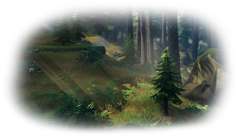
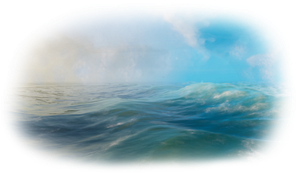
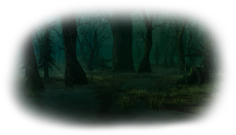
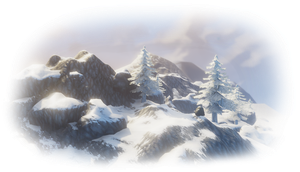
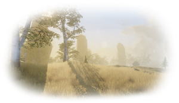
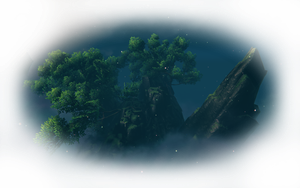
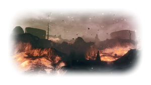
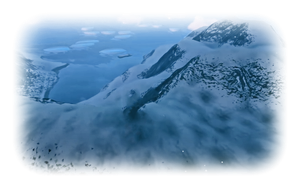

生物群系
本站支持中英文站内搜索。带 ↗ 的链接指向外部网站；各页来源版本见页脚。
生物群系是英灵神殿世界中的不同区域，以独特外观以及其中的生物和资源区分。几乎每个生物群系还是一位弃誓者的领地。
生态区域列表
| 生物群系 | 说明 | 分布范围（距世界中心） |
|---|---|---|
| 游戏前期 | ||
 青青草原 |
新世界的初始区域，遍布 桦树, 山毛榉、以及 橡树 等树木，生活着低等级生物。 | 距中心 0 至 5100 米 |
 黑暗林山 |
阴暗而危险的森林，生长着 冷杉 与 松树 等树木，资源更丰富，包括 圆木, 锡、以及 铜. | 距中心 500 至 10200 米 |
 无尽之海 |
位于海岸外的深水中，生活着 利维坦 与 蛟龙. | 海拔低于 -26 米（灰烬之地除外） |
| 游戏中期 | ||
 泥泞沼泽 |
危险阴暗的浅水区域，充满了 蚂蟥, 腐废地堡 其中遍布 尸鬼，以及有毒的 软泥怪. | 距中心 2000 至 6000 米 （迷雾之地更新前的世界：2000 至 8000 米） |
 凛冽雪山 |
高耸冰封的山脉，遍布 巨狼 和会飞的 霜龙 等耐受严寒的生物。 | 海拔高于 50 米，距中心至少 600 米（灰烬之地和北方深境除外） |
 北境平原 |
温暖晴朗的区域，覆盖金色草地与致命昆虫。这里生活着 丑地精 部族、 平原牦牛 与 杀人蜂. | 距中心 2900 至 8000 米 |
| 游戏后期 | ||
 迷雾之地 |
浓雾笼罩的岩石区域，生长着世界树嫩枝，生活着 野兔, 矮人，以及以下敌对昆虫： 邪蛛探索者. | 距中心 5900 至 10200 米 |
 灰烬之地 |
炽热的区域，越往内陆地形变化越大，中央覆盖熔岩。大部分居民属于以下不死军团： 灰烬亡灵 骷髅。 | 世界南端 |
 极北之地 |
雪覆山丘、森林与冰封河流，生活着 驼鹿, 厄妖、以及 巨魔长老. | 世界北端 |
生态区域变体
世界生成时，距世界中心一定距离以外的各片生物群系，有概率获得区域修正。修正可能产生以下效果：
- 改变植被，例如草原中有更多覆盆子或只有桦树，或黑森林中只有树桩
- 生成额外建筑，例如沼泽、平原或迷雾之地中的巨大骨骸，或平原中更多的焦油坑
- 提高生成以下生物的概率： 带星级 生物
- 允许生成通常不属于该生物群系的生物，例如沼泽中的邪蝠；或提高已有生物的生成概率，例如出现更多邪煞之树
- 禁止生成该区域的原生生物
同一区域可同时受多项修正影响。以下生物群系可能受到修正：
无尽之海、灰烬之地和北方深境没有其他区域变体。
趣闻
- “biome”（生物群系）一词源自同名的生态学概念。
- 在 英灵神殿 于 2021 年二月推出抢先体验时，计划中的九种生态区域有五种可供探索。其余四种可以进入，但没有实质内容。
- 截至2026年九月正式发布，除海洋外，所有生物群系均已完整实装。海洋重做最终被放弃，理由是它只承担连接其他生物群系的通道作用，而有实质内容的是其他生物群系。
- 替代生物群系随1.0版本加入。
- 距世界中心10200米后不再生成陆地，世界边缘位于10500米处，因此世界直径为21km。
| 生物群系 | |||||||||||||||||||
|---|---|---|---|---|---|---|---|---|---|---|---|---|---|---|---|---|---|---|---|
| 重要 地点 |
| ||||||||||||||||||
| 资源 采集点 |
| ||||||||||||||||||
Biomes are regions in the world of Valheim that can be distinguished by their unique aesthetics, as well as the creatures and resources contained within. Additionally, almost every biome is the domain of one of the Forsaken.
List of biomes
| Biome | Description | Availability (from the world center) |
|---|---|---|
| Early Game | ||
Meadows |
Starting biome of new worlds filled with Birch, Beech, and Oak trees which is inhabited by low level mobs. | From 0 to 5100 meters |
Black Forest |
Dark and hostile forest of Fir and Pine trees with more resources, including Corewood, Tin, and Copper. | From 500 to 10200 meters |
Ocean |
Found off the coast in deep waters. Home to Leviathans and Sea Serpents. | Below -26 meters altitude (excluding Ashlands) |
| Mid Game | ||
Swamp |
Dangerous, shadowy area with shallow water full of Leeches, Crypts filled with Draugrs, and poisonous Blobs. | From 2000 to 6000 meters (in worlds before the Mistlands update: 2000 to 8000 meters) |
Mountain |
Tall frozen mountains teeming with Wolves and flying Drakes that resist the biome's biting cold. | Above 50 meters altitude (excluding the Ashlands and the Deep North), from 600 meters |
Plains |
Warm sunny area with golden grass and killer bugs. Home to the Fuling clan, Lox and Deathsquitoes. | From 2900 to 8000 meters |
| Late Game | ||
Mistlands |
A fog-covered land with rocky terrain and Yggdrasil shoots, inhabited by Hares, Dvergrs, and hostile insects such as Seekers. | From 5900 to 10200 meters |
Ashlands |
A fiery realm, the terrain changes the more inland one travels, with central parts taken up by lava. The undead army of Charred skeletons make up most of the population. | Southern edge of the world |
Deep North |
Snow-capped hills and forests with frozen rivers, inhabited by Moose, Elaking, and Gammeltrolls. | Northern edge of the world |
Alternative biomes
Each biome patch has a chance to have modifiers applied to it on world generation, but only a certain distance from the world center. These modifiers can have the following effects:
- Affect foliage, like more Raspberries or only Birches in the Meadows, or only stubs in the Black Forest
- Generate additional structures, like Large Bones in the Swamps, Plains or Mistlands, or more Tar Pits in the Plains
- Increase the chance for starred creatures
- Enable the spawning of certain creatures not normally encountered in the biome, such as Bats in the Swamp, or increase existing chances for a creature to spawn, like more Abominations
- Disable the spawning of creatures native to the biome
Several modifiers can affect a single area at once. The following biomes can be affected:
- Meadows has 8 modifiers.
- Black Forests have 8 modifiers.
- Swamps have 5 modifiers.
- Mountains have 3 modifiers.
- Plains have 5 modifiers.
- Mistlands have 6 modifiers.
Oceans, the Ashlands and the Deep North do not have any alternative variants.
Trivia
- The term "biome" comes from the ecological concept of the same name.
- At Valheim's early access launch in February 2021, five of the planned nine biomes were made available to explore. The other four were accessible, but lacked any meaningful content.
- As of the full release in September 2026, all biomes excluding the Ocean are fully implemented. An Ocean overhaul was ultimately abandoned, with the argument that it only serves the role of a highway between other biomes, which do have meaningful content.
- Alternative biomes were introduced in the 1.0 release.
- Land stops generating at 10200 meters from the center and the World Edge is at 10500 meters, giving the world a diameter of 21km.
| Biomes | Meadows • Black Forest • Ocean • Swamp • Mountain • Plains • Mistlands • Ashlands • Deep North • World Edge | ||||||||||||||||||
|---|---|---|---|---|---|---|---|---|---|---|---|---|---|---|---|---|---|---|---|
| Points of interest |
| ||||||||||||||||||
| Resource nodes |
| ||||||||||||||||||